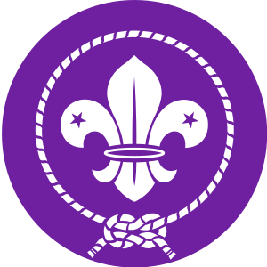
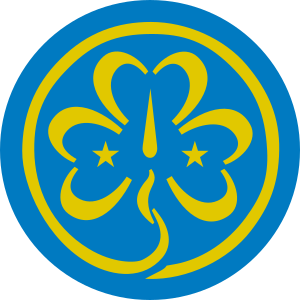

Celosvětová nezávislá a nezisková organizace, která vznikla v roce 1920 s cílem pomáhat svým členským skautským organizacím vychovávat mladé lidi na celém světě bez ohledu na jejich rasu, víru, kterou vyznávají, barvu pleti a sociální podmínky. Jejím zakladatelem se stal vojenský generál Lord Robert Baden-Powell. WOSM podporuje jednotu mezi lidmi, porozumění účelů a principu skautingu a snaží se usnadnit jeho šíření a rozvoj po celém světě. 
Celosvětové společenství, které sdružuje a podporuje organizace dívčího skautingu ve 145 zemích světa s celkem asi
10 miliony členů.
Bylo založeno v roce 1928 Robertem Baden-Powellem a má své sídlo v Londýně v Anglii. Jedná se o protějšek Světové
organizace skautského hnutí (WOSM). Členskými organizacemi WAGGGS jsou národní skautské organizace jak čistě dívčí
(kterých je menšina), tak také pro chlapce a dívky, jako je i český Junák.
